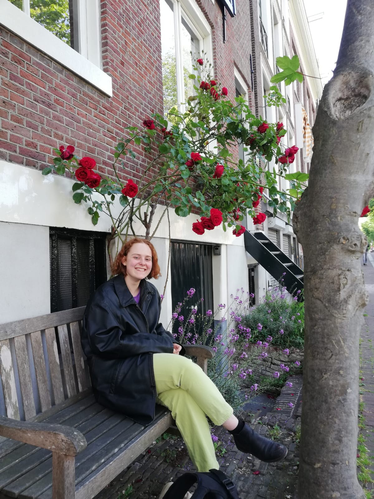
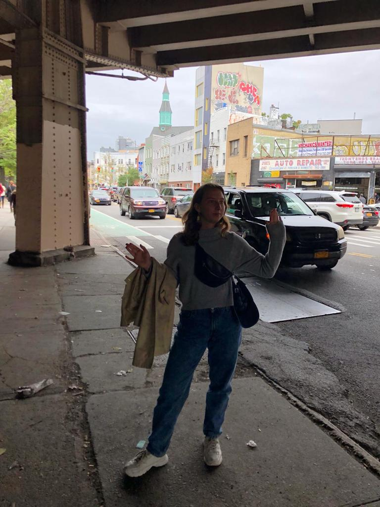
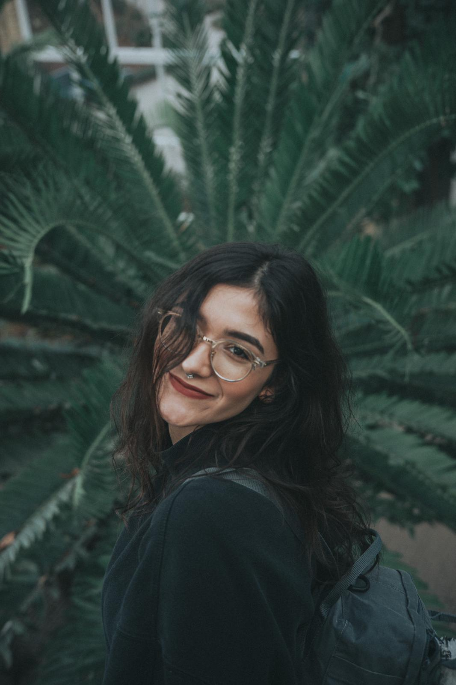

Pan-Dam is a multi-media online newspaper which aims at empowering the Youth of Amsterdam to participate in an innovative, sustainable development of the city, by cultivating a greater understanding of Amsterdam’s urban dynamics. We are here to talk about Amsterdam: its strengths, weaknesses, uniquenesses, contours, people. We want Amsterdam to thrive, become the best it can be. To allow for its blooming, Pan-Dam does two things: it provides an analysis of Amsterdam’s urban dynamics and empowers its readers by making them protagonists, through the use of narrative journalism. Pan-Dam is a bottom-up newspaper, all of our content comes from talking to the fabric of the city: You. It is also You, we hope, who will make use of our stories to fix what is broken and build what is missing. Hence the name, ‘all’-Dam: involving all people, exposing all urban realities.
TEAM
Fanny Tockner

My name is Fanny Tockner and I’m a PPE student at the VU from Berlin, Germany. I’m excited to be part of the Pan-Dam team, because it is a grassroot magazine, where all decisions and contents are made from the bottom up and as a collective effort. It is a platform to creatively and more deeply engage with the city and share stories that ought to be heard - beyond tulips and canals.
Scintilla Benevolo

I’m Scintilla Benevolo, from Italy, and I study PPE at the VU. In September of 2019 I moved to New York for a five week internship, where I decided - once back in Amsterdam - to open a publication focusing on urban development. My stay in New York was a beautiful experience, I found its urban character to be fascinating, yet radically different from that of Amsterdam. With Pan-Dam we want to explore Amsterdam’s urban dynamics, expose its strengths and weaknesses, for the purpose of inspiring its readers to engage in fixing what is broken and building what is missing. Cities can flourish and cities can learn from each other.
Tiana Japp

Hi, my name is Tiana Japp and I moved to the Netherlands three years ago from Canada and the US. Currently, I am doing my bachelors at the Vrije Universiteit in Literature and Society. Through Pan-Dam, I hope to help bring attention to important topics within our city that need to be told. As an Indigenous woman living in Amsterdam, it can be difficult at times due to the lack of knowledge and representation found in the general consciousness. Therefore, my passion lies in helping marginalized voices be heard. Through Pan-Dam, we hope to not only focus on the cultural happenings of Amsterdam, but the many social matters that need to be recognized. As this publication continues to evolve, we hope to grow into something that creates positive change from the ground up.